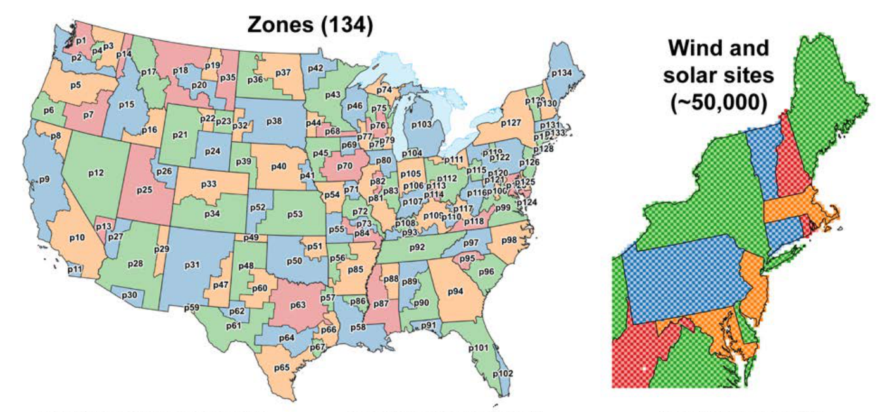
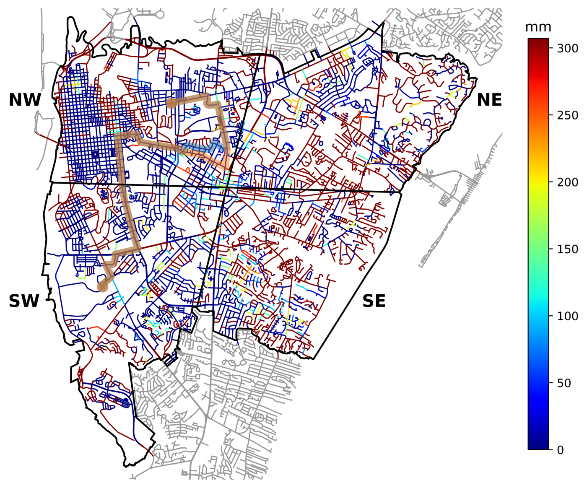
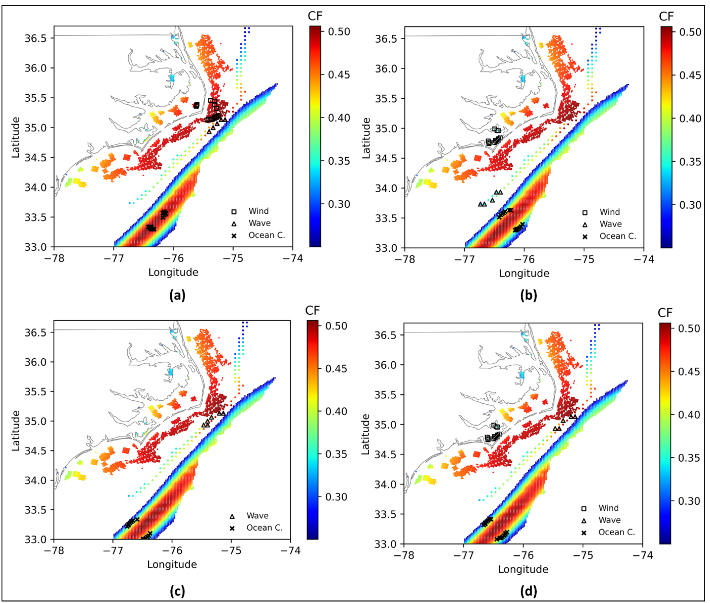
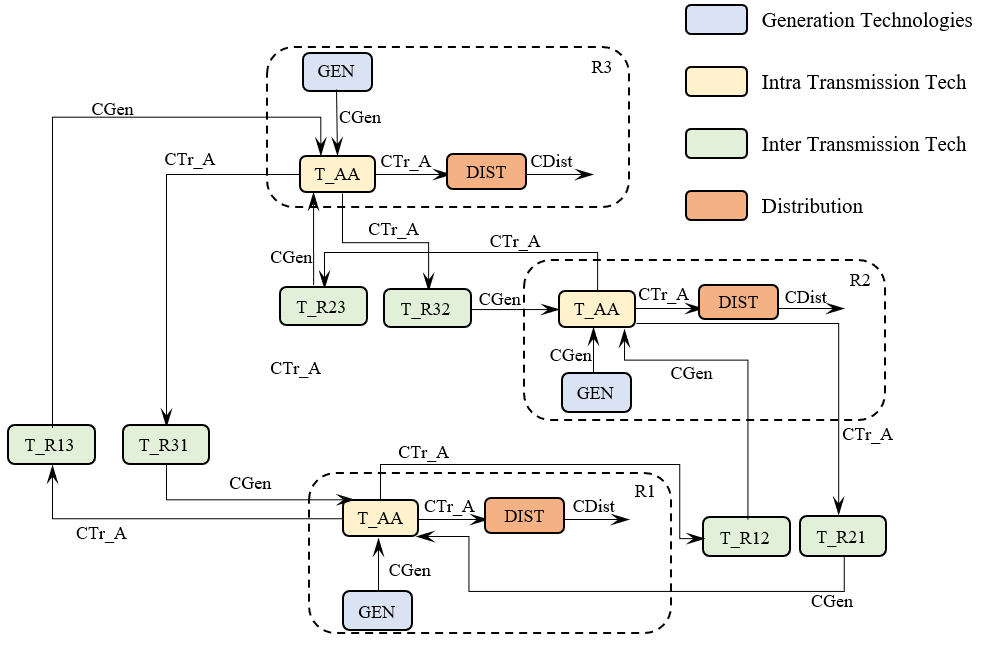
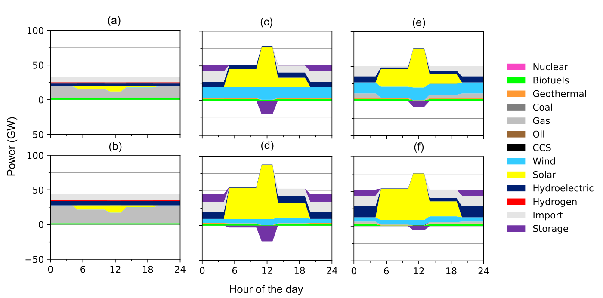

Projects
I use optimization and data analysis to study energy investment, renewable resources, and infrastructure risk.
5 entries

Uncertainty in electricity investment decisions
Technology costs and fuel prices can lead electricity investment plans in different directions. This project uses Monte Carlo workflows with ReEDS to explore how those uncertainties affect generation choices across the U.S. system. The work connects uncertain model inputs with the range of investment outcomes they produce.

Road network vulnerability under floods
Flooding can close a road, slow a journey, or disconnect a neighborhood. This project combines street-level flood estimates with routing optimization to track those changes over time. Case studies of three hurricanes in Wilmington, North Carolina, identify vulnerable connections and show why emergency planning benefits from storm-specific information.

Marine renewable energy portfolios
Offshore wind, waves, and ocean currents offer different patterns of energy supply. This research combines resource modeling, scenario generation, and portfolio optimization to choose sites and technology mixes that balance cost with reliable output. Related work brings device design and sizing into the same investment decision.

Energy planning under hurricane risk
Long-lived electricity investments must serve demand through both ordinary conditions and extreme events. This project develops a multistage stochastic extension of TEMOA to represent hurricane damage and infrastructure vulnerability. It connects the risks facing generation and networks with decisions about when and where to invest.

Energy storage in long term planning
Storage shifts electricity between hours, but investment models often represent time in broad blocks. This collaboration adds operational detail to TEMOA and tests how time resolution and technology choices influence storage deployment in Italy. The study connects daily charging patterns with long-term decarbonization decisions.
No entries match these filters. Try another year or topic.